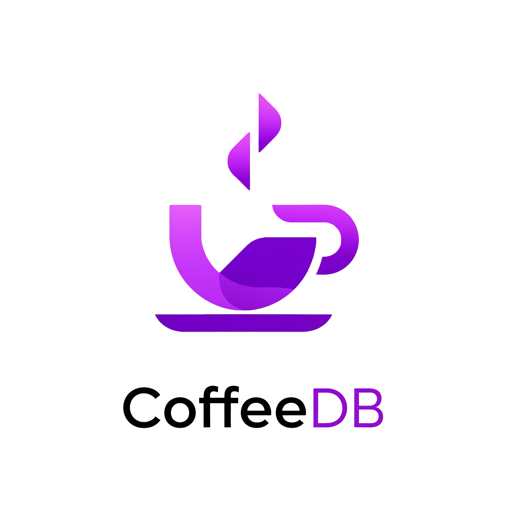

Nowoczesna aplikacja internetowa dla miłośników kawy – pozwala odkrywać, oceniać i przeglądać kawy speciality, kawiarnie oraz palarnie.
Odwiedź PlatformęCoffeeDB to innowacyjna aplikacja webowa, zaprojektowana dla pasjonatów kawy. Łączy funkcje odkrywania, oceniania i eksploracji najlepszych kaw, kawiarni oraz palarni. W dobie rosnącej popularności kawy speciality, ta platforma stanowi centralny punkt dla globalnej społeczności kawowej.
To nie jest tylko kolejna aplikacja - to kompleksowy ekosystem, który integruje wszystkie aspekty świata kawy. Dzięki filtrom wyszukiwania, interaktywnym mapom i szczegółowym profilom kaw, użytkownicy mogą odkrywać nowe smaki i miejsca, dzielić się swoimi doświadczeniami.
Aplikacja dostępna pod linkiem: http://srv17.mikr.us:40330/
Wizją tej platformy jest stworzenie globalnej, pulsującej życiem społeczności kawowej, gdzie każdy miłośnik kawy może bez trudu odkrywać nowe, ekscytujące smaki, dzielić się swoimi unikalnymi doświadczeniami. CoffeeDB jest cyfrowym kompasem dla wszystkich, którzy cenią doskonałość w filiżance kawy - od początkujących entuzjastów po doświadczonych, profesjonalnych baristów.
Misją CoffeeDB jest zrewolucjonizowanie sposobu, w jaki ludzie odkrywają i doświadczają kawy poprzez:
CoffeeDB to platforma, która łączy świat kawy w jednym cyfrowym ekosystemie, ułatwiając odkrywanie nowych smaków i doświadczeń wszystkim uczestnikom społeczności kawowej - od entuzjastów, przez profesjonalistów, po właścicieli biznesów, tworząc tym samym rewolucję w kulturze picia kawy.
Mimo rosnącego zainteresowania kawą wysokiej jakości, rynek wciąż boryka się z kilkoma kluczowymi wyzwaniami, które CoffeeDB adresuje:
| Problem | Wpływ | Dotknięci interesariusze |
|---|---|---|
| Rozproszenie informacji | Trudność w znalezieniu wiarygodnych danych | Miłośnicy kawy, turyści |
| Brak zintegrowanych recenzji | Niepełny obraz jakości | Konsumenci, biznesy |
| Trudność lokalizacji miejsc | Ograniczona dostępność doświadczeń | Entuzjaści kawy, podróżnicy |
| Niska widoczność małych palarni | Utrudniony rozwój | Właściciele palarni |
CoffeeDB oferuje kompleksowe rozwiązanie, tworząc jednolitą platformę, która:
Agreguje wszystkie kluczowe dane o kawach, palarniach i kawiarniach w jednym, łatwo dostępnym centrum wiedzy.
Oferuje system ocen i komentarzy, dający pełny, wielowymiarowy obraz jakości produktów i miejsc.
Udostępnia interaktywną, dynamiczną mapę z filtrowaniem, ułatwiającą znalezienie kawowych perełek w każdej lokalizacji.
Wyróżnia najlepsze miejsca i produkty, motywując do podnoszenia standardów w branży.
CoffeeDB wyróżnia się bogatym zestawem funkcji, które wspólnie tworzą kompleksowe narzędzie dla wszystkich miłośników kawy:
Rewolucyjna mapa to technologiczny przełom w odkrywaniu miejsc związanych z kawą, oferująca precyzyjną lokalizację, filtrowanie i szczegółowe informacje.
Dzięki rozbudowanemu formularzowi użytkownicy mogą oceniać kawę według kilku kryteriów (aromat, smak, body, aftertaste), a także przeglądać średnie oceny i historię opinii zapisane w bazie danych.
Rozbudowana baza danych zawiera szczegółowe profile smakowe, informacje o przetwarzaniu, paleniu, pochodzeniu ziaren oraz powiązania z miejscami serwującymi daną kawę.
CoffeeDB została zaprojektowana z myślą o różnorodnych grupach użytkowników, oferując każdej z nich unikalne korzyści:
Entuzjaści poszukujący nowych doznań, którzy pasjonują się kawą i nieustannie eksplorują nowe smaki, metody parzenia i miejsca. CoffeeDB jest dla nich cyfrowym przewodnikiem.
Zarządzający kawiarniami i palarniami, potrzebujący skutecznego narzędzia do promocji. CoffeeDB zwiększa ich widoczność i umożliwia kontakt z klientami.
Osoby odkrywające lokalne smaki, które chcą poznawać kulturę kawową różnych regionów. CoffeeDB pomaga im szybko lokalizować najlepsze miejsca.
Bariści, kupcy i eksperci kawowi, potrzebujący aktualnych informacji o trendach. CoffeeDB stanowi dla nich cenne źródło wiedzy.
CoffeeDB oferuje szereg wymiernych korzyści, wskazując drogę każdemu uczestnikowi społeczności kawowej
CoffeeDB wyróżnia się na tle konkurencji dzięki połączeniu katalogu kaw, palarni i kawiarni z systemem recenzji oraz interaktywną mapą, co pozwala użytkownikom łatwo odkrywać i oceniać miejsca związane z kawą.
W przeciwieństwie do innych platform, CoffeeDB integruje wszystkie elementy w jednym, spójnym ekosystemie.
| Funkcjonalność | CoffeeDB | Inne platformy |
|---|---|---|
| Katalog kaw z profilami | ✅ Pełny | ⚠️ Ograniczony |
| Baza palarni i kawiarni | ✅ Globalna | ⚠️ Często lokalna |
| System recenzji | ✅ Wielowymiarowy | ⚠️ Podstawowy |
| Interaktywna mapa | ✅ Dynamiczna | ⚠️ Prosta / Brak |
| Społeczność | ✅ Aktywna, Żywa | ⚠️ Pasywna |
CoffeeDB stawia na otwartość i współpracę – każdy użytkownik może dodawać recenzje kaw, kawiarni i palarni, a wszystkie opinie są publicznie dostępne. Dzięki temu społeczność współtworzy bazę wiedzy i pomaga innym w wyborze najlepszych miejsc i produktów.
Nowoczesna aplikacja internetowa dla miłośników kawy – pozwala odkrywać, oceniać i przeglądać kawy speciality, kawiarnie oraz palarnie.
Wypróbuj CoffeeDB Teraz!